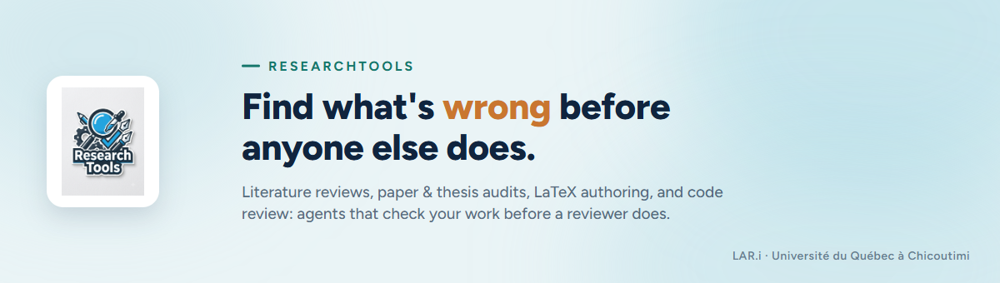

ResearchTools¶
An AI-assisted toolbox for researcher-professors and graduate students. It finds and fixes what's wrong before a reviewer, a thesis committee, or a grant panel does.
📚 Academic writing¶
Literature reviews, paper and thesis audits, BibTeX cleanup, reviewer responses, submission packages — a ScholarEval score before the reviewer ever sees it.
🛠️ Software & hardware review¶
Code, PCB, and 3D CAD design review, with the rt-observe dashboard to watch the agents work
and log what they did.
Why ResearchTools¶
| Without | With ResearchTools |
|---|---|
| Catch a missing reference or a broken hypothesis flow after the reviewer does | An auditor scores the manuscript first, against the same ScholarEval rubric a committee uses |
| Re-read a cited paper's abstract and hope the citation says what you think it says | extract-contributions checks the citing sentence against the paper's own stated contribution |
| Burn cloud tokens on routine docstrings and refactors | local-writer / local-coder push that generation to a local model, for free |
This page is the homepage of the themed MkDocs Material site (mkdocs.yml at the repo root,
brand palette in assets/extra.css — navy #10243E, teal #1F9E8F, amber
#C9762F, taken from the project's own design system in post-media/Series Template.dc.html).
Nothing here duplicates the manual; every link points at the same file a Claude Code session
or a plain GitHub browse would read.
Preview locally: .venv-docs\Scripts\python.exe -m mkdocs serve (env: pip install -r
requirements-docs.txt into .venv-docs), then open the printed http://127.0.0.1:8000.
Publish: mkdocs gh-deploy, run by hand whenever the docs change — no GitHub Actions
workflow, matching this repo's no-CI/CD policy — then enable Settings → Pages → Deploy from
a branch → gh-pages. Two known gaps in the built site (not on the raw GitHub browse): links
that reach outside docs/ (to README.md, Architecture.md, .claude/CLAUDE.md) resolve
on GitHub but not inside the MkDocs build, since its docs_dir is docs/ only; and
04-skills.md's internal table of contents uses GitHub's heading-slug algorithm, which
differs slightly from MkDocs' own slugifier, so those specific in-page anchors don't jump
correctly inside the built site.
Start here¶
The manual lives in manual/, one chapter per topic:
| # | Chapter |
|---|---|
| 00 | Purpose & overview |
| 01 | Installation |
| 02 | Profiles & environment |
| 03 | Token management |
| 04 | Skills |
| 05 | Security audit |
| 06 | Aider nightly pipeline |
| 07 | rt-observe & dashboard |
| 08 | Commands |
| 09 | ThesisTracker integration |
| 10 | Agents |
| 11 | File locations |
Deep-dive references¶
Longer, single-topic documents that a manual chapter points into rather than repeats:
- aider-setup.md — the aider nightly pipeline, full manual
- rt-observe.md — the toolkit-state dashboard, full reference
- authoring-and-mirrors.md — adding or editing an agent, skill, or command, and regenerating the per-tool mirrors
- contributor-notes.md — shared conventions (English-only definition files, agent/skill layout, local-model routing, git/GitHub workflow)
- github-repo-setup-playbook.md — portable step-by-step for bringing another repo's GitHub presentation up to this same standard (README structure, doc-site setup, community files, repo settings, Issue/board/PR process rules), written for a Claude Code session to execute, not for a human to read once
Elsewhere in the repository¶
- ../README.md — repository root entry point
- ../Architecture.md — this repository's own 7-layer component architecture
- ../NEW_ARCHITECTURE.md — the architecture shared with the sibling repository ThesisTracker
- ../CONTRIBUTING.md · ../CODE_OF_CONDUCT.md